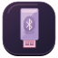
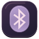
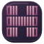

Rose Punk Illustrated · Full catalogAudio Player
InstalledAzahar
InstalledBeekeeper Studio
InstalledBluejay
Installed
Bluetooth Adapters
Installed
Bluetooth Manager
InstalledBottles
InstalledBrave
InstalledCalendar
InstalledCamera
InstalledCharacters
InstalledChatGPT
InstalledCheese
InstalledClocks
InstalledCodex LB
InstalledColor Profile Viewer
InstalledConnections
InstalledContacts
InstalledDataGrip
Installeddconf Editor
InstalledDiscord
InstalledDisk Usage Analyzer
InstalledDisks
InstalledDocument Scanner
InstalledDocument Viewer
InstalledDrizzle Studio
InstalledEye of GNOME
InstalledFcitx 5 Configuration
InstalledFedora Media Writer
InstalledFile Roller
InstalledFiles
InstalledFirefox
InstalledFlatseal
InstalledFonts
InstalledGhostty
InstalledGIMP
InstalledGmail
InstalledGoogle Calendar
InstalledGoogle Chrome
InstalledGoogle Photos
InstalledGPU Screen Recorder
InstalledGRASS
InstalledHandBrake
InstalledHelp
InstalledHomeworld Remastered
Installed
Htop
InstalledImage Viewer
InstalledJava Monitor
InstalledJetBrains Toolbox
InstalledKeyboard layout viewer
InstalledKimi AI
Installedkitty
InstalledKOReader
InstalledLogs
InstalledLutris
InstalledMaps
InstalledMetadata Cleaner
InstalledMonochrome Music
Installedmpv Media Player
InstalledMullvad VPN
InstalledNeovim
InstalledNM GUI
InstalledOBS Studio
InstalledObsidian
InstalledParental Controls
InstalledPasswords and Keys
InstalledPlex
InstalledProblem Reporting
InstalledQGIS Desktop
InstalledRustDesk
InstalledRygel Preferences
Installedscrcpy
InstalledSettings
InstalledSignal
InstalledSimpleScreenRecorder
InstalledSoftware
InstalledSolaar
InstalledSpotify
InstalledSteam
InstalledStrata
InstalledSublime Text
InstalledSystem Monitor
InstalledTelegram
InstalledTerminal
InstalledText Editor
InstalledThe Witcher 2
InstalledThumbnails
InstalledThunderbird
InstalledTour
InstalledTramoramic Experience
InstalledTransmission
InstalledTweaks
Installeduuctl
InstalledVideo Player
InstalledVLC media player
InstalledVolume Control
InstalledWeather
Installedyuzu
InstalledZapZap
InstalledZed
InstalledZen Browser
InstalledZoom
InstalledAudacity
Extra coverageBlender
Extra coverageFigma
Extra coverageInkscape
Extra coverageLibreOffice
Extra coverageMicrosoft Edge
Extra coverageMicrosoft Teams
Extra coverageNotion
Extra coverageSlack
Extra coverageVisual Studio Code
Extra coverage